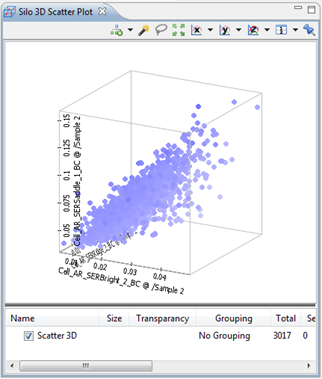

The 3D Scatter Plot is a graphical representation of points in 3 dimensions. Each of the chosen features, of the x, y and z axes accordingly, must be chosen from the same silo group.
It is used when you need a representation of points by 3 features that you can select using the axis buttons. Fog is used to show that points are further away and deeper within the curve.

It is not possible to add extra layers to this 3D chart.